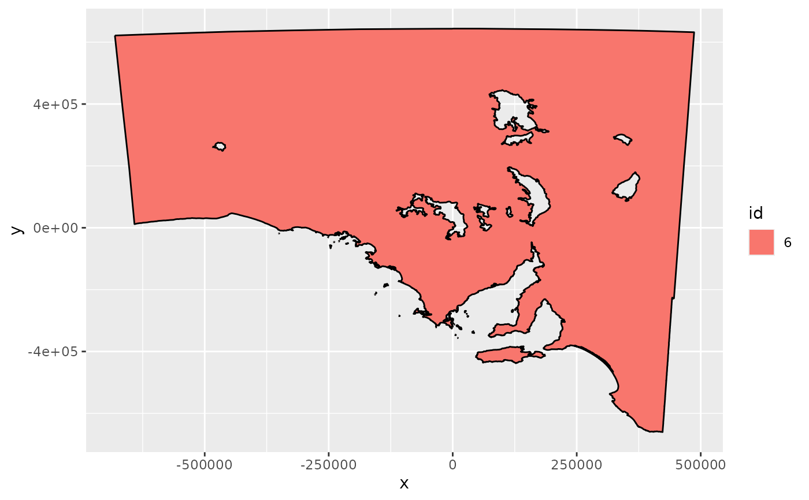

A data frame of coordinates and geometry classifiers of the garden state, South Australia.
gardenstate is the geometry, a data frame with columns:
x and y coordinate
Key attribute for the objects
Group attribute, unique values identify a closed ring, part is the part 'id' within an object
Logical, FALSE for "island" vs. "hole"
Numeric value to identify sort order within branch
The PROJ.4 string for this map is:
gs <- ggplot(gardenstate)
gs <- gs + aes(x = x, y = y, group = group, fill = id)
gs + geom_polypath() + geom_path()
